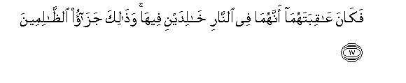

بسم الله الرحمن الرحيم
Sayyid Abul Ala Maududi - Tafhim al-Qur'an - The Meaning of the Qur'an
 59.
Surah Al Hashr (The Banishment)
59.
Surah Al Hashr (The Banishment)
The Surah derives its name from the mention of the word al-hashr in verse thereby implying that it is the Surah in which the word al-hashr has occurred.
Bukhari and Muslim contain a tradition from Hadrat Sa'id bin Jubair to the effect "When I asked Hadrat Abdullah bin Abbas about Surah Al-Hashr, he replied that it was sent down concerning the battle against the Bani an-Nadir just as Surah Al-Anfal was sent down concerning the Battle of Badr. In another tradition from Hadrat Sa'id bin Jubair, the words cited from Ibn Abbas (may Allah be pleased with him) are: Qul: Surah an-Nadir: Say, it is Surah an-Nadir." The same thing has been related also from Mujahid, Qatadah, Zuhri, Ibn Zaid, Yazid bin Ruman, Muhammad bin Ishaq and others. They are unanimous that the followers of the Book whose banishment has been mentioned in it, imply the Bani an-Nadir. Yazid bin Ruman, Mujahid and Muhammad bin Ishaq have stated that this whole Surah, from beginning to end, came down concerning this very battle.
As for the question as to when this battle took place, Imam Zuhri has stated on the authority of Urwah bin Zubair that it took place six months after the Battle of Badr. However, Ibn Sa'd, Ibn Hisham and Baladhuri regard it as an event of Rabi' al-Awwal, A. H. 4, and the same is correct. For all traditions agree that this battle took place after the incident of Bi'r Ma'unah, and historically also it is well known that the incident of Bir Ma'unah occurred after the Battle of Uhud and not before it.
In order to understand the subject matter of this Surah well, it is necessary to have a look at the history of the Madinah and Hejaz Jews, for without it one cannot know precisely the real causes of the Holy Prophet's dealing with their different tribes the way he did.
No authentic history of the Arabian Jews exists in the world. They have not left any writing of their own in the form of a book or a tablet which might throw light on their past, nor have the Jewish historians and writers of the non-Arab world made any mention of them, the reason being that after their settlement in the Arabian peninsula they had detached themselves from the main body of the nation, and the Jews of the world did not count them as among themselves. For they had given up Hebrew culture and language, even the names, and adopted Arabism instead. In the tablets that have been unearthed in the archaeological research in the Hejaz no trace of the Jews is found before the first century of the Christian era, except for a few Jewish names. Therefore, the history of the Arabian Jews is based mostly on the verbal traditions prevalent among the Arabs most of which bad been spread by the Jews themselves.
The Jews of the Hejaz claimed that they had come to settle in Arabia during the last stage of the life of the Prophet Moses (peace be upon him). They said that the Prophet Moses had dispatched an army to expel the Amalekites from the land of Yathrib and had commanded it not to spare even a single soul of that tribe. The Israelite army carried out the Prophet's command, but spared the life of a handsome prince of the Amalekite king and returned with him to Palestine. By that time the Prophet Moses had passed sway. His successors took great exception to what the army had done, for by sparing the life of an Amalekite it had clearly disobeyed the Prophet and violated the Mosaic law. Consequently, they excluded the army from their community, and it had to return to Yathrib and settle there for ever.(Kitab al-Aghani, vol. xix, p. 94). Thus the Jews claimed that they had been living in Yathrib since about 1200 B.C. But, this had in fact no historical basis and probably the Jews had invented this story in order to overawe the Arabs into believing that they were of noble lineage and the original inhabitants of the land.
The second Jewish immigration, according to the Jews, took, place in 587 BC. when Nebuchadnezzer, the king of Babylon, destroyed Jerusalem and dispersed the Jews throughout the world. The Arab Jews said that several of their tribes at that time had come to settle in Wadi al-Qura, Taima, and Yathrib.(Al-Baladhuri, Futuh al-Buldan). But this too has no historical basis. By this also they might have wanted to prove that they were the original settlers of the area.
As a matter of fact, what is established is that when in A. D. 70 the Romans massacred the Jews in Palestine, and then in A. D. 132 expelled them from that land, many of the Jewish tribes fled to find an asylum in the Hejaz, a territory that was contiguous to Palestine in the south. There, they settled wherever they found water springs and greenery, and then by intrigue and through money lending business gradually occupied the fertile lands. Ailah, Maqna, Tabuk, Taima, Wadi al Qura, Fadak and Khaiber came under their control in that very period, and Bani Quraizah, Bani al-Nadir, Bani Bahdal, and Bani Qainuqa also came in the same period and occupied Yathrib.
Among the tribes that settled in Yathrib the Bani al Nadir and the Bani Quraizah were more prominent for they belonged to the Cohen or priest class. They were looked upon as of noble descent and enjoyed religious leadership among their co- religionists. When they came to settle in Madinah there were some other tribes living there before, whom they subdued and became practically the owners of this green and fertile land. About three centuries later, in A. D. 450 or 451, the great flood of Yemen occurred which has been mentioned in vv. 16-17 of Surah Saba above. As a result of this different tribes of the people of Saba were compelled to leave Yemen and disperse in different parts of Arabia. Thus, the Bani Ghassan went to settle in Syria, Bani Lakhm in Hirah (Iraq), Bani Khuzaah between Jeddah and Makkah and the Aus and the Khazraj went to settle in Yathrib. As Yathrib was under Jewish domination, they at first did not allow the Aus and the Khazraj to gain a footing and the two Arab tribes had to settle on lands that had not yet been brought under cultivation, where they could hardly produce just enough to enable them to survive. At last, one of their chiefs went to Syria to ask for the assistance of their Ghassanide brothers; he brought an army from there and broke the power of the Jews. Thus, the Aus and the Khazraj were able to gain complete dominance over Yathrib, with the result that two of the major Jewish tribes, Bani an-Nadir and Bani Quraizaha were forced to take quarters outside the city. Since the third tribe, Bani Qainuqa, was not on friendly terms with the other two tribes, it stayed inside the city as usual, but had to seek protection of the Khazraj tribe. As a counter measure to this Bani an Nadir and Bani Quraizah took protection of the Aus tribe so that they could live in peace in the suburbs of Yathrib.
Before the Holy Prophet's arrival at Madinah until his emigration the following were the main features of the Jews position in Hejaz in general and in Yathrib in particular:
In the matter of language, dress, civilization and way of life they had completely adopted Arabism, even their names had become Arabian. Of the 12 Jewish tribes that had settled in Hejaz, none except the Bani Zaura retained its Hebrew name. Except for a few scattered scholars none knew Hebrew. In fact, there is nothing in the poetry of the Jewish poets of the pre-Islamic days to distinguish it from the poetry of the Arab poets in language, ideas and themes. They even inter-married with the Arabs. In fact, nothing distinguished them from the common Arabs except religion. Notwithstanding this, they had not lost their identity among the Arabs and had kept their Jewish prejudice alive most ardently and jealously. They had adopted superficial Arabism because they could not survive in Arabia without it.
Because of this Arabism the western orientalists have been misled into thinking that perhaps they were not really Israelites but Arabs who had embraced Judaism, or that at least majority of them consisted of the Arab Jews. But there is no historical proof to show that the Jews ever engaged in any proselytizing activities in Hejaz, or their rabbis invited the Arabs to embrace Judaism like the Christian priests and missionaries. On the contrary, we see that they prided themselves upon their Israelite descent and racial prejudices. They called the Arabs the Gentiles, which did not mean illiterate or uneducated but savage and uncivilized people. They believed that the Gentiles did not possess any human rights; these were only reserved for the Israelites, and therefore, it was lawful and right for the Israelites to defraud them of their properties by every fair and foul means. Apart from the Arab chiefs, they did not consider the common Arabs fit enough to have equal status with them even if they entered Judaism. No historical proof is available, nor is there any evidence in the Arabian traditions, that some Arab tribe or prominent clan might have accepted Judaism. However, mention has been made of some individuals, who had become Jews. The Jews, however, were more interested in their trade and business than in the preaching of their religion. That is why Judaism did not spread as a religion and creed in Hejaz but remained only as a mark of pride and distinction of a few Israelite tribes. The Jewish rabbis, however, had a flourishing business in granting amulets and charms, fortune telling and sorcery, because of which they were held in great awe by the Arabs for their "knowledge" and practical wisdom.
Economically they were much stronger than the Arabs. Since they bad emigrated from more civilized and culturally advanced countries of Palestine and Syria, they knew many such arts as were unknown to the Arabs; they also enjoyed trade relations with the outside world. Hence, they had captured the business of importing grain in Yathrib and the upper Hejaz and exporting dried dates to other countries. Poultry farming and fishing also were mostly under their controls They were good at cloth weaving too. They had also set up wine shops here and there, where they sold wine which they imported from Syria. The Bani Qainuqa generally practiced crafts such as that of the goldsmith, blacksmith and vessel maker. In all these occupations, trade and business these Jews earned exorbitant profits, but their chief occupation was trading in money lending in which they had ensnared the Arabs of the surrounding areas. More particularly the chiefs and elders of the Arab tribes who were given to a life of pomp, bragging and boasting on the strength of borrowed money were deeply indebted to them. They lent money on high rates of interest and then would charge compound interest, which one could hardly clear off once one was involved in it. Thus, they had rendered the Arabs economically hollow, but it had naturally induced a deep rooted hatred among the common Arabs against the Jews.
The demand of their trade and economic interests was that they should neither estrange one Arab tribe by befriending another, nor take part in their mutual wars. But, on the other hand, it was also in their interests, that they should not allow the Arabs to be united and should keep them fighting and entrenched against each other, for they knew that whenever the Arab tribes united, they would not allow them to remain in possession of their 1large properties, gardens and fertile lands, which they had come to own through their profiteering and money lending business. Furthermore, each of their tribes also had to enter into alliance with one or another powerful Arab tribe for the sake of its own protection so that no other powerful tribe should overawe it by its might. Because of this they had not only to take part in the mutual wars of the Arabs but they often had to go to war in support of the Arab tribe to which their tribe was tied in alliance against another Jewish tribe which was allied to the enemy tribe. In Yathrib the Bani Quraizah and the Bani an-Nadir were the allies of the Aus while the Bani Qainuqa of the Khazraj. A little before the Holy Prophet's emigration, these Jewish tribes had confronted each other in support of their respective allies in the bloody war that took place between the Aus and the Khazraj at Buath.
Such were the conditions when Islam came to Madinah, and ultimately an Islamic State came into existence after the Holy Prophet's (upon whom be Allah's peace) arrival there. One of the first things that he accomplished soon after establishing this state was unification of the Aus and the Khazraj and the Emigrants into a brotherhood, and the second was that he concluded a treaty between the Muslims and the Jews on definite conditions, in which it was pledged that neither party would encroach on the rights of the other, and both would unite in a joint defense against the external enemies. Some important clauses of this treaty are as follows, which clearly show what the Jews and the Muslims had pledged to adhere to in their mutual relationship:
"The Jews must bear their expenses and the Muslims their expenses. Each must help the other against anyone who attacks the people of this document. They must seek mutual advice and consultation, and loyalty is a protection against treachery. They shall sincerely wish one another well. Their relations will be governed by piety and recognition of the rights of others, and not by sin and wrongdoing. The wronged must be helped. The Jews must pay with the believers so long as the war lasts. Yathrib shall be a sanctuary for the people of this document. If any dispute or controversy likely to cause trouble should arise, it must be referred to God and to Muhammad the Apostle of God; Quraish and their helpers shall not be given protection. The contracting parties are bound to help one another against any attack on Yathrib; Every one shall be responsible for the defense of the portion to which he belongs" (lbn Hisham, vol. ii, pp. 147 to 150).
This was on absolute and definitive covenant to the conditions of which the Jews themselves had agreed. But not very long after this they began to show hostility towards the Holy Prophet of Allah (upon whom be Allah's peace) and Islam and the Muslims, and their hostility and perverseness went on increasing day by day. Its main causes were three:
First, they envisaged the Holy Prophet (upon whom be Allah's peace) merely as a chief of his people, who should be content to have concluded a political agreement with them and should only concern himself with the worldly interests of his group. But they found that he was extending an invitation to belief in Allah and the Prophethood and the Book (which also included belief in their own Prophets and scriptures), and was urging the people to give up disobedience of Allah and adopt obedience to the Divine Commands and abide by the moral laws of their own prophets. This they could not put up with. They feared that if this universal ideological movement gained momentum it would destroy their rigid religiosity and wipe out their racial nationhood.
Second, when they saw that the Aus and the Khazraj and the Emigrants were uniting into a brotherhood and the people from the Arab tribes of the surrounding areas, who entered Islam, were also joining this Islamic Brotherhood of Madinah and forming a religious community, they feared that the selfish policy that they had been following of sowing discord between the Arab tribes for the promotion of their own well being and interests for centuries, would not work in the new system, but they would face a united front of the Arabs against which their intrigues and machinations would not succeed.
Third, the work that the Holy Messenger of Allah (upon whom be Allah's 'peace) was carrying out of reforming the society and civilization included putting an end to all unlawful methods" in business and mutual dealings. More than that; he had declared taking and giving of interest also as impure and unlawful earning. This caused them the fear that if his rule became established in Arabia, he would declare interest legally forbidden, and in this they saw their own economic disaster and death.
For these reasons they made resistance and opposition to the Holy Prophet their national ideal. They would never hesitate to employ any trick and machination, any device and cunning, to harm him. They spread every kind of falsehood so as to cause distrust against him in the people's minds. They created every kind of doubt, suspicion and misgiving in the hearts of the new converts so as to turn them back from Islam. They would make false profession of Islam and then would turn apostate so that it may engender more and more misunderstandings among the people against Islam and the Holy Prophet (upon whom be Allah's peace). They would conspire with the hypocrites to create mischief and would cooperate with every group and tribe hostile to Islam. They would create rifts between the Muslims and would do whatever they could to stir them up to mutual feuds and fighting. The people of the Aus and the Khazraj tribes were their special target, with whom they had been allied for centuries. Making mention of the war of Buath before them they would remind them of their previous enmities so that they might again resort to the sword against each other and shatter their bond of fraternity into which Islam had bound them. They would resort to every kind of deceit and fraud in order to harm the Muslims economically. Whenever one of those with whom that had business dealings, would accept Islam, they would do whatever they could to cause him financial loss. If he owed them something they would worry and harass him by making repeated demands, and if they owed him something, they would withhold the payment and would publicly say that at the time the bargain was made he professed a different religion, and since he had changed his religion, they were no longer under any obligation towards him. Several instances of this nature have been cited in the explanation of verse 75 of Surah Al Imran given in the commentaries by Tabari, Nisaburi, Tabrisi and in Ruh al Ma'ani.
They had adopted this hostile attitude against the covenant even before the Battle of Badr. But when the Holy Prophet (upon whom be Allah's peace) and the Muslims won a decisive victory over the Quraish at Badr, they were filled with grief and anguish, malice and anger. They were in fact anticipating that in that war the powerful Quraish would deal a death blow to the Muslims. That is why even before the news of the Islamic victory reached Madinah they had begun to spread the rumor that the Holy Prophet (upon whom be Allah's peace) had fallen a martyr and the Muslims had been routed, and the Quraish army under Abu Jahl was advancing on Madinah. But when the battle was decided against their hopes and wishes, they burst with anger and grief. Ka'b bin Ashraf, the chief of the Bani an-Nadir, cried out:"By God, if Muhammad has actually killed these nobles of Arabia, the earth's belly would be better for us than its back." Then he went to Makkah and incited the people to vengeance by writing and reciting provocative elegies for the Quraish chiefs killed at Badr. Then he returned to Madinah and composed lyrical verses of an insulting nature about the Muslim women. At last, enraged with his mischief, the Holy Prophet (upon whom be Allah's peace) sent Muhammad bin Maslamah Ansari in Rabi al-Awwal, A. H. 3, and had him slain. (Ibn Sad, Ibn Hisham, Tabari).
The first Jewish tribe which, after the Battle of Badr, openly and collectively broke their covenant were the Bani Qainuqa. They lived in a locality inside the city of Madinah. As they practiced the crafts of the goldsmith, blacksmith and vessel maker, the people of Madinah had to visit their shops fairly frequently. They were proud of their bravery and valor. Being blacksmiths by profession even their children were well armed, and they could instantly muster 700 fighting men from among themselves. They were also arrogantly aware that they enjoyed relations of confederacy with the Khazraj and Abdullah bin Ubbay, the chief of the, Khazraj, was their chief supporter. At the victory of Badr, they became so provoked that they began to trouble and harass the Muslims and their women in particular, who visited their shops. By and by things came to such a pass that one day a Muslim woman was stripped naked publicly in their bazaar. This led to a brawl in which a Muslim and a Jew were killed. Thereupon the Holy Prophet (upon whom be Allah's peace) himself visited their locality, got them together and counseled them on decent conduct. But the reply that they gave was; "O Muhammad, you perhaps think we are like the Quraish. They did not know fighting; therefore, you overpowered them. But when you come in contact with us, you will see how men fight." This was in clear words a declaration of war. Consequently, the Holy Prophet (upon whom be Allah's peace) laid siege to their quarters towards the end of Shawwal (and according to some others, of Dhi Qa'dah) A. H. 2. The siege had hardly lasted for a fortnight when they surrendered and all their fighting men were tied and taken prisoners. Now Abdullah bin Ubayy came up in support of them and insisted that they should be pardoned. The Holy Prophet conceded his request and decided that the Bani Qainuqa would be exiled from Madinah leaving their properties, armor and tools of trade behind. (Ibn Sa'd, Ibn Hisham, Tarikh Tabari).
For some time after these punitive measures (i. e. the banishment of the Qainuqa and killing of Ka'b bin Ashraf the Jews remained so terror stricken that they did not dare commit any further mischief. But later when in Shawwal, A. H. 3, the Quraish in order to avenge themselves for the defeat at Badr, marched against Madinah with great preparations, and the Jews saw that only a thousand men had marched out with the Holy Prophet (upon whom be Allah's peace) as against three thousand men of the Quraish, and even they were deserted by 300 hypocrites who returned to Madinah, they committed the first and open breach of the treaty by refusing to join the Holy Prophet in the defense of the city although they were bound to it. Then, when in the Battle of Uhud the Muslims suffered reverses, they were further emboldened. So much so that the Bani an-Nadir made a secret plan to kill the Holy Prophet (upon whom be Allah's peace) though the plan failed before it could be executed. According to the details, after the incident of Bi'r Maunah (Safar, A. H. 4) Amr bin Umayyah Damri slew by mistake two men of the Bani Amir in retaliation, who actually belonged to a tribe which was allied to the Muslims, but Amr had mistaken them for the men of the enemy. Because of this mistake their blood money became obligatory on the Muslims. Since the Bani an-Nadir were also a party in the alliance with the Bani Amir, the Holy Prophet (upon whom be Allah's peace) went to their clan along with some of his Companions to ask for their help in paying the blood money. Outwardly they agreed to contribute, as he wished, but secretly they plotted that a person should go up to the top of the house by whose wall the Holy Prophet was sitting and drop a rock on him to kill him. But before they could execute their plan, he was informed in time and be immediately got up and returned to Madinah.
Now there was no question of showing them any further concession. The Holy Prophet at once sent to them the ultimatum that the treachery they had meditated against him had come to his knowledge; therefore, they were to leave Madinah within ten days; if anyone of them was found staying behind in their quarters, he would be put to the sword. Meanwhile Abdullah bin Ubayy sent them the message that he would help them with two thousand men and that the Bani Quraizah and Bani Ghatafan also would come to their aid; therefore, they should stand firm and should not go. On this false assurance they responded to the Holy Prophet's ultimatum saying that they would not leave Madinah and he could do whatever was in his power. Consequently, in Rabi' al-Awwal, A. H. 4, the Holy Prophet (upon whom be Allah's peace) laid siege to them, and after a few days of the siege (which according to some traditions were 6 and according to others 15 days) they agreed to leave Madinah on the condition that they could retain all their property which they could carry on thee camels, except the armor. Thus, Madinah was rid of this second mischievous tribe of Jews. Only two of the Bani an-Nadir became Muslims and stayed behind. Others went to Syria and Khaiber.
This is the event that has been discussed in this Surah.
The theme of the Surah as stated above, is an appraisal of the battle against the Bani an Nadir. In this, on the whole, four things have been discussed.
In the first four verses the world has been, admonished to take heed of the fate that had just befallen the Bani an-Nadir. A major tribe which was as strong in numbers as the Muslims, whose people boasted of far more wealth and possession who were by no means ill equipped militarily and whose forts were well fortified could not stand siege even for a few Days, and expressed their readiness to accept banishment from their centuries old, well established settlement even though not a single man from among them was slain. Allah says that this happened not because of any power possessed by the Muslims but because the Jews had tried to resist and fight Allah and His Messenger, and those who dare to resist the power of Allah, always meet with the same fate.
In verse 5, the rule of the law of war that has been enunciated is: the destruction caused in the enemy territory for military purposes does not come under "spreading mischief in the earth."
In vv 6-10 it has been stated how the lands and properties which come under the control of the Islamic State as a result of war or peace terms, are to be managed. As it was the first ever occasion that the Muslims took control of a conquered territory, the law concerning it was laid down for their guidance.
In vv. 11-17 the attitude that the hypocrites had adopted on the occasion of the battle against the Bani an-Nadir has been reviewed and the causes underlying it have been pointed out.
The whole of the last section (vv. 18-24) is an admonition for all those people who had professed to have affirmed the faith and joined the Muslim community, but were devoid of the true spirit of the faith. In it they have been told what is the real demand of the Faith, what is the real difference between piety and wickedness, what is the place and importance of the Quran which they professed to believe in, and what are the attributes of God in Whom they claimed to have believed.

In the name of Allah, the Compassionate, the Merciful.
[1-2] All that there is in the heavens and the earth has glorified only Allah, for He alone is the All-Mighty, the All-Wise.1 He it is Who drove the disbelievers from among the people of the Book out of their houses2 at the very first assault.3 You did not think that they would ever go out, and they too on their part were thinking that their fortresses would protect them from Allah,4 but Allah came upon them whence they had little expected.5 He cast terror into their hearts with the result that they were destroying their dwellings by their own hands as well as by the hands of the believers.6 So, take heed, O you who have eyes to see!7
[3-4] Had Allah not decreed banishment for them, He would have chastised them in this world,8 and in the Hereafter there certainly awaits :hem the torment of the Fire. All this happened because they resisted Allah and His Messenger, and whoever resists Allah (should know that) Allah is stern in inflicting punishment.
[5] Whatever palm trees you cut down, or whatever you left standing upon their roots, it was only by Allah's leave.9 And (Allah gave the leave) in order to disgrace the transgressors.10
[6-10] And the properties that Allah took out from their possession and restored to His Messenger,11 are not such that you might have rushed your horses and camels upon them, but Allah gives His Messengers authority over whomever He wills, and Allah has power over everything.12 Whatever Allah restored to His Messenger from the people of the settlements, belongs to Allah and the Messenger and the kinsfolk and the orphans and the needy and the wayfarers,13 so that it does not remain circulating among your rich people only.14 Take whatever the Messenger gives you and refrain from whatever he forbids you. Fear Allah, for Allah is stern in inflicting punishment.15 (Moreover, the properties) are for those poor emigrants who have been expelled from their homes and their possessions.16 They seek Allah's bounty and His goodwill, and are ever ready to succor Allah and His Messenger. They indeed are the truthful. (And it is also for those) who believed eve before the arrival of the emigrants and were staying in the Abode of Migration.17 They love those who have migrated to them and entertain no desire in their hearts for what is given to them and prefer others to themselves even though they may be needy.18 The fact is that those who are saved from the greed of their own hearts, ale truly successful.19 (And it is also for those) who come after them,20 who say, "Our Lord, forgive us , and forgive all our brothers who embraced the Faith before us, and do not place in our hearts any malice towards the believers. Our Lord, You are very Kind and Compassionate."21


[11-17] Have22 you not seen those who have adopted the attitude of hypocrisy? They say to their brothers who have disbelieved from among the people of the Book, "If you are driven out, we shall go forth with you, and we shall never listen to anyone in your respect, and if war is waged against you, we shall help you. " But Allah is witness that they are utter liars. If they are driven out, these people will never go forth with them, and if war is waged against them, they will never help them. And even if they help them, they will turn their backs, and then will get no help from anywhere. In their hearts there is greater dread of you than of Allah,23 because they are a people devoid of understanding.24 They will never fight you in a body (in the open field); if at all they fight, they will fight in fortified strongholds, or from behind walls. They are very intense in mutual enmity. You think that they are united, whereas their hearts are divided.25 This is because they are a people devoid of sense. They are even like those who have tasted, a short while before them, the evil consequences of their deeds,26 and there awaits them a painful torment. They are like Satan who orders man to disbelieve, and when man has disbelieved, he says: "I have nothing to do with you; I fear Allah, Lord of the worlds.”27 The end of both will be that they shall go to Hell for ever, and that is the recompense of the wrongdoers.
[18-20] O you28 who have believed, fear Allah, and let everyone consider well what he has forwarded for the morrow.29 Fear Allah, for Allah . is well aware of all that you do. Do not be like those who forgot Allah, and Allah caused them to forget their own selves.30 They indeed are the transgressors The dwellers of Hell and the dwellers of Paradise cannot be alike. The dwellers of Paradise alone are truly successful.
[21] Had We sent down this Qur'an upon a mountain, you would have seen it humbling itself and splitting asunder from the fear of Allah.31 We present these parables before the people so that they may reflect (on themselves).
[22-24] He32 is Allah besides Whom there is no god.33 He is the Knower of the unseen and the seen.34 He is the Compassionate and the Merciful.35 He is Allah, besides Whom there is no god. He is the Sovereign,36 the Holy,37 the Source of safety,38 the Giver of peace,39 the Guardian,40 the All-Mighty,41 the Enforcer of His decrees,42 and the ever Supreme.43 Exalted is Allah alone Who is the Planner of Creation,44 its Enforcer and its Fashioner.45 His are the excellent names.46 Whatever is there in the heavens and the earth glorifies Him.47 and He is the All-Mighty and the All-Wise.48
1For explanation, see E.N.'s 1, 2 of Surah Al-Hadid. The object of this introductory sentence before making an appraisal of the banishment of the Ban; an-Nadir is to prepare the mind to understand the truth that the fate this powerful tribe met was not the result of the power of the Muslims but a manifestation of the power of Allah.
2Here, the reader should understand one thing at the outset so as to avoid any confusion about the banishment of the Bani an-Nadir. The Holy Prophet (upon whom be Allah's peace) had concluded a formal written treaty with the Bani an-Nadir. They had not broken this agreement as such that it should have become void But the reason why they were attacked was that after making different kinds of minor violations of it, they at last committed such an offense which amounted to the breach of trust. That is, they plotted to kill the leader of the other party to the treaty, i. e. the Islamic State of Madinah. The plot became exposed, and when the were accused of breaking the agreement they could not deny it Thereupon, the Holy Prophet (upon whom be Allah's peace) told them either to leave Madinah or to be ready for a war. This notice was in accordance with this injunction of the Qur'an: "If you ever fear treachery from any people, throw their treaty openly before them. " (AI-Anfal: 58) That is why Allah is describing their exile as His own action, for it was precisely in accordance with Divine Law. In other words, they were not expelled by the Holy Prophet (upon whom be Allah's peace) and the Muslims but by Allah Himself. The other reason why Allah has described their exile as His own action, has been stated in the following verses.
3The word hashr in the Text means to gather the scattered individuals to gather or to take out scattered individuals after mustering them together. Thus, the words li-awwal-il-hashr mean: with the first hashr or on the occasion of the first hashr. As for the question, what is implied by the first hashr here, the commentators have disputed it. According to one group it implies the banishment of the Bani an-Nadir from Madinah, and this has been described as their first hashr in the sense that their second hashr took place in the time of Hadrat `Umar, when the Jews and the Christians were expelled from the Arabian peninsula, and the final hashr will take place on the Day of Resurrection. According to the second group it implies the gathering of the Muslim army together to fight the Bani an-Nadir; and li-awwal-il-hashr means that as soon as the Muslims had gathered together to fight them, and no blood yet had been shed, they, by the manifestation of Allah's power, offered to be banished from Madinah of their own accord. In other words, these words have been used here in the meaning of "at the very first assault". Shah Waliullah has translated it "at the first gathering of the army". Shah 'Abdul Qadir has translated it "at the first mustering." In our opinion this translation very nearly gives the meaning of these words.
4To understand this one should keep in mind the fact that the Bani anNadir had been well established here for centuries. They lived in compact populations outside Madinah without any lien element. Their settlement was well fortified, which had fortified houses as are generally built in feud-ridden tribal areas. Then heir numerical strength also equaled that of the Muslims, and inside Madinah itself many of the hypocrites were their supporters..Therefore, the. Muslims could never expect that they would, even without fighting, be so unnerved by the siege as to leave their homes willingly. likewise, the Bani an-Nadir also could not have imagined that some power would compel them to leave their homes within six days, Although the Bani Qainuqa' had been expelled before them, and their false pride of valor had proved to be of no avail, they lived in a locality inside Madinah and did not have any separate fortified settlement; therefore, the Bani an-Nadir thought that their inability to withstand the Muslims was not exceptionable, Contrary to this, in view of their own fortified settlement and strongholds they could not imagine that some power could turn them out so easily. That is why when the Holy Prophet (upon whom be Allah's peace) served a notice on them to leave Madinah within ten days, they boldly retorted, saying: We are not going to quit: you may do whatever you please."
Here, the question arises: On what basis has Allah said: 'They were thinking that their fortresses would save them from Allah'. Did the Bani an-Nadir really know that they were not facing Muhammad bin `Abdullah (upon whom be Allah's peace) but Allah? And did they, in spite of knowing this, think that their fortresses would save them from Allah? .This is a question which would confound every such person who does not know the psychology of the Jewish people and their centuries-old traditions. As regards the common men, no one can imagine that despite their knowing consciously that they were facing Allah, they would Entertain the false hope that their forts and weapons would save them from Allah. Therefore, an ignorant person would interpret the Divine Word, saying that the Bani an-Nadir in view of the strength of their forts were apparently involved in the misunderstanding that they would remain safe from the Holy Prophet's attack, but in reality they were fighting Allah and from Him their forts could not save them. But the fact is that the Jews in this world are a strange people, who have been knowingly fighting Allah: they killed the Prophets of Allah knowing them to be His Prophets, and they declared boastfully and arrogantly that they had killed the Prophets of Allah. Their traditions say that their great Patriarch, the prophet Jacob, wrestled with Allah throughout the night and Allah could not throw him even till daybreak. .Then, when at daybreak Allah asked Jacob to let Him go, Jacob replied that he would not let Him go until He blessed him. Allah asked him his name, and he answer `Jacob Allah said that his name would no longer be Jacob, but Israel, "because you strove with God and with men, and prevailed." (See Gen. 32: 25-29 in the latest Jewish translation; The Scriptures Scriptures, published by the Jewish Publication Society of America 1954). In the Christian translation of the Bible too this subject has been rendered likewise. In the footnote of the Jewish translation, "Israel" has been explained as: He who striveth with God. " In the Cyclopaedia of Biblical Literature the meaning given of Israel" by the Christian scholars is: "Wrestler with God." Then in Hosea (O.T.) the Prophet Jacob has been praised thus: "By his strength he had power with God: yea, he had power over the angel, and prevailed. " (Ch. 12: 3-4). Now, obviously, the people of Israel are the children of the same Prophet Israel who, according to their faith, had striven with God and wrestled with Him. For them it is not at all difficult that they should stand firm and fight even God. On this very basis, they, even according to their own profession, killed the Prophets of God, and under the same false pride they put the Prophet Jesus on the cross and bragged: "We have killed Jesus Christ, son of Mary, Messenger of Allah. " Therefore, it was not against their traditions that they fought Muhammad (upon whom be Allah's peace) despite their knowledge that he was Allah's Messenger. If not their common people, their rabbis and learned men knew full well that he was the Messenger of Allah. The Qur'an itself contains several evidences to this effect. (For instance, see E:N.'s 79, 95 of Al-Baqarah, E.N.'s 190, 191 of An-Nisa, E.N.'s 70, 73 of As-Saaffat).
5Allah's coming down upon them does not mean that Allah was staying in another place whence He attacked them. But this is a metaphoric expression. The object is to give the idea that while facing Allah they were thinking that Allah could chastise them only by bringing an army against them from the front and they were confident that they would resist that force by their fortifications, But Allah attacked them from whence they had not thought it possible; and this was that He made than weak and broke their power of resistance from within after which neither their weapons nor their strongholds could help them.
6That is, The destruction occurred in two ways: from outside the Muslims besieged them and started demolishing their fortifications, and from within, first they raised obstacles of stone and wood to stop the Muslims from advancing, and for this purpose broke their own houses for the material; then, when they became certain that they would have to vacate the place, they started pulling down their houses, which they had so fondly built and decorated, with their own hands, so as to render them useless for the Muslims Later, when they settled peace with the Holy Prophet (upon whom be Allah's peace) on the condition that they would be spared their lives but would have the permission to carry away whatever they could, except the weapons and armor, they started removing the frames of the doors and windows, even pegs; so much so that some people removed the beams and wooden ceilings, which they put upon the back of their camels and left."
7There are many lessons which one can learn from this event, which have been alluded to in this brief but eloquent sentence These Jews were none other but the followers of the former Prophets: they believed in God, in the Book, in the former Prophets and the Hereafter. Accordingly, they were the former Muslims. But when they turned their back on religion and morality and adopted open hostility to the truth only for the sake of their selfish desires and worldly motives and interests, and showed scant regard for their treaties and agreements, Allah's grace was turned away from them, otherwise Allah had no personal enmity with than. Therefore, first of all, the Muslims themselves have been admonished to heed their fate and Learn a lesson from it, lest they too should start behaving as if they were the beloved children of God, as the Jews did, and should be involved in the misunderstanding that their being included among the followers of the Last Prophet of God would by itself guarantee for them Allah's bounty and His support, apart from which they were not bound to adhere to any demand of religion and morality. Besides, those people of the world also have been asked to learn a lesson from this event, who oppose the truth consciously, and then place reliance upon their wealth and power, their means and resources, thinking that these would save them from the Divine punishment. The Jews of Madinah were not unaware that the Holy Prophet Muhammad (upon whom be Allah's peace and blessings) had not risen for the supremacy of a people or tribe, but he was presenting an ideological invitation the addressees of which were all men, and every man, no matter what race or country he belonged to, could join his Ummah by accepting the invitation, without discrimination or distinction. They were themselves witnessing that Bilal of Habash, Suhaib of Rome, and Salman of Persia enjoyed the same position and status in the Muslim community as was enjoyed by the people of the Holy Prophet's own house. Therefore, they were not feeling any danger that the Quraish and the Aus and the Khazrij would gain an upper hand over them. Nor were they unaware that the ideological invitation that he was presenting was precisely the same as their own Prophets had been presenting. The Holy Prophet never put forward the claim that he had come with a new religion, unknown to the people, and that the people should give up their former religion and accept his religion ' instead. But what he claimed was that the religion being presented by him was the same that the Prophets of God had been preaching and presenting since the beginning of creation. And from their Torah they could themselves confirm that it was actually the same religion, the principles of which were not any different from the principles of the religion of the Prophets. On the same basis they were told in the Qur'an: Affirm faith in the teaching sent down by Me, which confirms the teaching that you already possess, and you should not be its first deniers." They were also witnessing what character and morals the Holy Prophet (upon whom be Allah's peace) possessed, and what revolution had taken place in the lives of those who had accepted his message. For a long time the Ansar of Madinah had been their closest neighbors. They knew what kind of people they had been before embracing Islam and what they became after their conversion to Islam. Thus, they were well aware of the invitation, of the inviter and of the results of accepting the invitation. But in spite of witnessing and knowing all this, only on account of their racial prejudice and worldly interests, they expended all their energy against the message of truth about which there was no room for doubt at least in their minds. After such an obvious and open hostility to the truth they expected that their strongholds would save them from Allah, whereas the whole human history bears evidence that the one who is resisted by the power of God, cannot save and protect himself by any weapon, means or device.
8"Would have chastised them in the world": world have caused them to be annihilated. That is, had they fought instead of surrendering to save their lives, they would have been completely wiped out. Their men would have perished in the war and their womenfolk and children would have been taken prisoners and there would be no one to have them ransomed.
9The reference is to the fact that the Muslims cut down or burnt many of the palm-trees that stood in the oases around the settlement of the Bani an Nadir in order to facilitate the siege, However, they left those trees standing which did not obstruct the military operations. At this the hypocrites of Madinah and the Bani Quraizah, and the Bani an-Nadir themselves, raised a clamor, saying that, on the one hand, Muhammad (upon whom be Allah's peace and blessings) prohibited spreading disorder in the world, but, on the other, fruit trees were being cut down by his command, which amounted to spreading disorder in the world. At this Al-Hashr Allah ,sent down the Command: 'Whatever trees you cut down, or whatever you left standing, your neither act was unlawful, but it had Allah's permission." The legal injunction that is derived from this verse is that the destruction caused for the sake of military operations does not come under "spreading disorder in the world. " But spreading disorder in the world is that an army under the fit of war hysteria .should intrude into the enemy territory and start destroying the crops, cattle. gardens, houses and everything in its way without any reason. In this matter. the general instruction is the same which Hadrat Abu Bakr Siddiq gave while dispatching the Muslim army to Syria: "Do not cut down fruit trees; do not destroy crops; do not ravage the settlements." This was precisely in accordance with the Qur'anic teaching, which condemns those who spread chaos; 'When they get power they direct all their efforts towards spreading corruption in the land, destroying harvests and killing people." (AI-Baqarah: 205). But the specific command in respect of the war exigencies is that if destruction is necessary for military operations against the enemy, it is lawful. Thus, Hadrat 'Abdullah bin Mas'ud has given this explanation in the commentary of this verse: 'The Muslims had cut down only those trees of the Bani an-Nadir that stood on the battlefield. " (Tafsir Nisaburi). Some of the Muslim jurists have overlooked this aspect of the matter and expressed the opinion that the permissibility of cutting the trees of the Bani an-Nadir was confined only to that particular event. It does not make it generally permissible that whenever war necessitates trees of the enemy be cut down and burnt. Imam Auza'i, Laith and Abu Thaur hold this same opinion. But the majority of the jurists hold the view that for the sake of important military operations it is permissible. However, this is not permissible for the purpose of mere destruction and pillage.
One may ask: This verse of the Qur'an could satisfy the Muslims, but how could those who did not accept the Qur'an as Divine Word be satisfied at this reply to their objection that both acts were permissible as they had Allah's permission for it? The answer is: This verse of the Qur'an was sent down to satisfy only the Muslims; it was not sent down to satisfy the disbelievers. Since due to the objection of the Jews and the hypocrites, or due to their own thinking, they had been involved in the misgiving whether they were guilty of spreading disorder in the earth, Allah gave them the satisfaction that both the acts, cutting down some trees to facilitate the siege and leaving some other trees standing which did not obstruct the siege, were in accordance with Divine Law.
The traditionists in their traditions have disputed the point whether the order to cut and burn the trees had been given by the Holy Prophet (upon whom be Allah's peace himself, or whether the Muslims had done it of their own accord, and then later asked the Holy Prophet about its legal aspect. Hadrat Abdullah bin 'Umar has reported that the Holy Prophet himself had ordered it. (Bukhari, Muslim , Musnad Ahmad, Ibn Jarir). The same also has been reported by Yazid bin. Ruman (Ibn Jarir). On the contrary, Mujahid and Qatadah say that the Muslims had on their own cut down the trees; then a dispute arose among them whether what they had done was permissible or not. Some said it was permissible and some said it was not. At last Allah sent down this verse and approved the act of both. (Ibn Jarir). The same thing is supported by a tradition of Hadrat 'Abdullah bin 'Abbas: 'The Muslims were confused because Some of them had cut the trees and others had not; therefore, they wanted to ask the Holy Prophet (upon whom be Allah's peace) as to who would be rewarded for the act and who would be punished.' (Nasa i). Those of the jurists who have preferred the first tradition give the argument that this was the Holy Prophet's personal judgment, which was later ratified by revelation from Allah, and this a proof of the fact that in matters where no Divine Command existed, the Holy Prophet used to follow his personal judgment. On the other hand, those jurists who have preferred the second tradition, argue that the two groups of the Muslims had adopted two different views on the basis of their own personal judgments and Allah ratified both. Therefore, if the learned men arrive at different conclusions by judicious exercise of their personal judgment, then although their opinions might differ, they would all be correct in the Divine Shari ah.
10That is, "Allah willed that they should be disgraced if you cut down the trees and also if you left them standing." In the first case, they were disgraced when they saw that the trees of the gardens which they had planted with their own hands and which they had owned since ages, were being cut down before their very eyes and they were watching it helplessly. Even an ordinary peasant and gardener cannot tolerate another's misappropriation or intrusion into his field or garden. He would protect his field or garden at the risk of his life if somebody tried to destroy it in his presence. For if he cannot prevent destruction of his property, it would be a sign of his extreme humiliation and weakness. But here a whole tribe, which had been living at this place fearlessly and boldly for centuries, was watching helplessly that its neighbors had invaded its gardens and were destroying the trees while it could do nothing. After this even if they stayed on in Madinah they would have lived in disgrace and humility. In the second case, they were disgraced when on leaving Madinah they saw that the lush green gardens which had been in their possession till the previous day were now passing into the possession of the Muslims. Had they the power they would have laid waste the entire gardens by their own hands SO that not a single whole tree passed into the hands of the Muslims. But in their helplessness they left the city, despaired and grief-stricken, leaving everything intact behind.
11From here to the end of verse 10, Allah explains how the lands and properties that were restored to the Islamic State after the exile of the Ban; an- Nadir, are to be managed and administered. As it was the first occasion that a land was conquered and included in the Islamic territory, and many more lands were destined to be conquered in the future, the law governing the conquered lands was enunciated at the outset. Here, a note-worthy point is that Allah at this place has used the words: Ma af'-Allahu ala Rasuli-hi min-hum "whatever Allah restored to His Messenger from them." These words clearly imply that the rebels of Allah Almighty are not entitled to own the earth and things existing on it. If they have become their owners and are appropriating them, their ownership and appropriation of these things is, in fact, in the nature of usurpation of a master's property by a dishonest servant. The real right of these properties is that these should be spent and used in the service and obedience of their real Master, Allah, Lord of the worlds, according to His will, and their this use is possible only through the agency of the righteous believers. Therefore, the true position of the properties which pass from the ownership of the disbelievers into the hands of the Muslims as the result of a lawful war, is that their real Owner has withdrawn them from His disobedient and disloyal servants, and restored them to His obedient and loyal servants. That is why, in the terminology of the Islamic Law such properties have been described as Fai (restored properties).
12That is, "The restoration of these properties to the Muslims is not the result of the effort of the actual fighting army so that the army on that basis may have the right that the properties may be distributed among the soldiers, but its real nature is that Allah by His bounty has given dominance to His Messengers and the system that they represent over them. In other words, the passing of these properties into the Muslims' hands is not the direct result of the effort and struggle of the fighting army, but the result of the total strength that Allah has bestowed on His Messenger and his community and the system established by him Therefore, these properties are quite different in nature from the spoils of war and so cannot be distributed among the soldiers as such.
Thus, the Shari ah has made a distinction between ghanimah (spoils of war) and fai (restored properties). The injunction :n respect of the ghanimah has been given in surah AI-Anfal: 41, and it is this "It should be divided in five parts, four parts of which be distributed among the fighting army and the fifth deposited in the Public Treasury (Bait al-Mal), and expended on the items mentioned in the verse." As for the fai, the injunction is that it should not be distributed among the army, but it should be reserved for the items of expenditure being stated in the following verse. The distinction between the two has been made plain by the words: "You have not rushed your horses and camels on them," which imply the military operations. Thus, the properties which are taken as a direct result of such operations are the ghnimah and those which arc not the result of these operations are the fai. The distinction between ghanimah and tai that has been mentioned in this verse, has been explained in greater detail by the juristis of Islam. Ghanimah are only those transferable properties which are taken from the enemy during military action; other things than these, e.g. lands, houses and other transferable and nontransferable properties of the enemy, are excluded from the definition of ghanimah and are fai. The source of this explanation is the letter that Hadrat 'Umar (may Allah be pleased with him) had written to Hadrat Sa'd bin Abi Waqqas after the conquest of 'Iraq. In that letter he wrote: "Distribute the properties and goods which the soldiers of the army collected and brought to your camp among the Muslims who participated in the war, and leave the lands and the canals with those who work on them so that the proceeds thereof are used for the salaries of the Muslims." (Abu Yusuf. Kitab al-Kharaj, p. 24; Abu 'Ubaid, Kitab al-Amwal, p. 59; Yahya bin Adam, Kitab al-Kharaj, pp. 27-28, 48). On this very basis, Hadrat Hasan Basri says: "Whatever is taken from the enemy camp, is the right of those who won victory over it? and the lands are for the Muslims." Yahya bin Adam, p. 27). And Imam Abu Yusuf says: “Whatever the Muslims take from the enemy troops, and whatever goods and arms and cattle they collect and bring to their camp, is ghanimah; from this one-fifth will be deducted and the rest distributed among the soldiers." (Kitab al-Kharaj, p. 18). The same is the opinion of Yahya bin Adam, which he has expressed in his Kitab al-Kharaj (p. 27). Even more than this, what makes the distinction between ghanimah and fai clearer is that after the Battle of Nahawand when the ghanimah had been distributed and the conquered lands had been included in the Islamic State. a man named Sa'ib bin Aqra' found two bags of jewels outside the fort. He was confused whether it was the ghanimah which should be distributed in the army, or the fai which should be deposited in the Bait al-Mal Consequently, he came to Madinah and put the matter before Hadrat 'Umar, who decided that it should be sold and the price deposited in the Bait-al-Mal. From this it becomes clear that ghanimah are only those transferable properties which are taken by the soldiers during the war. After the war is over, the transferable properties also, like the nontransferable properties, become fai. Imam Abu 'Ubaid relates this event and says: "The properties that arc seized from the enemy by the use of force, when the war is still in progress, are ghanimah and what is taken after the war is over, when the territory has become Dar al-Islam (abode of Islam), is fai, which should be reserved for the common people of the dar al-Islam; the law of the one-fifth (khums) will not be applicable to it. " (Kitab al-Amwal p. 254).
After defining ghanimah thus, the rest of the properties, wealth and lands, which pass from the disbelievers' ownership to the Muslims may be divided into two main kinds first those which are taken as a result of actual fighting fanwatan in Fiqh terminology); second, those which are taken by the Muslims as a result of the peace terms whether peace is concluded because of the pressure of the military power of the Muslims, or their dread and awe, and in this are also included all those properties which pass into the Muslims' ownership in every other way than as a result of actual fighting The differences that have arisen among the jurists of Islam have been only concerning the first kind of the properties in order to determine their correct legal position, for they do not come under 'those upon which you have not rushed your horses and camels." As regards the second kind of the properties, all agree that they are fai, for the Qur'an has explicitly laid down the injunction about them. Below we shall discuss in detail the legal position of the first kind of the properties.
13In the preceding verse what was pointed out was why these properties should not be distributed among the fighting army like the spoils, and why the legal injunction concerning them is different from that concerning the spoils Now in this verse it is being stated as to who are entitled to have a share in these properties.
The first share in these is of Allah and His Messenger. The detail of how the Holy Prophet (upon whom be Allah's peace) acted on this injunction has been related by Malik bin Aus bin al-Hadathan on the authority of Hadrat 'Umar (may Allah be pleased with him), thus: The Holy Prophet used to take from it necessary expenses for himself and his family and the rest he used to spend on arranging arms and conveyances for Jihad. (Bukhari Muslim, Musnad Ahmad, Da 'ud, Tirmadhi Nasa i and others). After the passing away of the Holy Prophet this share was transferred to the Public Treasury of the Muslims so that it is spent in the service of the mission which Allah had entrusted to His Messenger. Imam Shafa' i is reported to have expressed the opinion that the share which was specifically meant for the Holy Prophet's person (upon whom be Allah's peace), is for his caliph after him, for the Holy Prophet was entitled to it on the basis of his office of leadership and not on the basis of the office of Apostleship. But the view of the. majority of the Shafe'i jurists in this matter is the same as of the other jurists, viz. that this share now is reserved for the religious and collective welfare of the Muslims, and not for any particular. person.
The second share is of the kinsfolk, and this implies the kinsfolk of the Holy Prophet (upon whom be Allah's peace), i.e. the Bani Hashim and the Bani al-Muttalib. This share was set aside so that, besides meeting his own and his family's requirements, the Holy Prophet could also fulfill his obligations towards those of his relatives who stood in need of his help, or whom he felt like helping. ,After the death of the Holy Prophet (upon whom be Allah's peace) this ceased to be a separate and independent source, because like the right; of the orphans and the wayfarers and the indigent among the Muslims, looking after the rights of the needy among the Bani Hashim and the Bani al-Muttalib also became the responsibility of the Public Treasury. However, they were treated as superior to others in so far as they had no share in the zakat. Hadrat 'Abdullah bin 'Abbas has related that in the time of Hadrat Abu Bakr and 'Umar and 'Uthman (may Allah be pleased with them), the first two shares were dropped and only the remaining three shares (i.e. those for the orphans and the indigent and the wayfarers) were kept as of those entitled to fai Then Hadrat `Ali (may Allah be pleased with him) also acted on the same in his time, Muhammad bin Ishaq has related on the authority of Imam Muhammad Baqir that although Hadrat 'Ali's personal opinion was the same as of the people of his house (that this share should be given to the relatives of the Holy Prophet), he did not think that he should act against the practice of Abu Bakr and `Umar. Hasan bin Muhammad bin Hanafiyah says that after the Holy Prophet a difference of opinion arose about these two shares (i.e. the share of the Holy Prophet and the share of his relatives). Some people said that the first share should go to the Holy Prophet's caliph, some said that the second share should go to the relatives of the Holy Prophet, and still others said that the second share should be given to the relatives of the caliph. At last, a consensus was reached that both the shares be spent on the requirements of Jihad 'Ata' bin Sa'ib says that Hadrat 'Umar bin 'Abdul `Aziz in his time had started sending the share of the Holy Prophet and the share of the relatives to the Bani Hashim. The opinion of Imam Abu Hanifah and of most of the Hanafi jurists is that in this matter the same practice is cornet as was., being followed in the time of the righteous Caliphs. (Abu Yusuf, Kitab al-Kharaj pp. 19-21). Imam Share'i's opinion is that both the rich and the needy from among the people whose being descended from the Bani Hashim and the Bani al-Muttalib is confirmed, or is well known, can be given shares from fai. (Mughni al-Muhtaj). The Hanafis say that only their needy people can be helped from this; however, their right to this is greater than that of others. (Ruh al-Ma'ani). According to Imam Malik, there is no restriction on the government in this matter. It can spend on any head that it deems fit and proper, but the better course is that it should give preference to the people of the Holy Prophet's house. (Hashiyah ad-Dusuqi ala-sh-Sharh-al-Kabir).
About the remaining three shares there is no dispute among the jurists. However, the difference between Imam Shafe'i and the other Imams is that according to Imam Shafe'i the total properties of fai are to be divided into five equal parts one part of which is to be spent on the above-mentioned heads in such a way that one-fifth of it is spent on the common benefits of the Muslims, one-fifth on the Bani Hashim and the Bani al-Muttalib, one-fifth on the orphans, one-fifth on the indigent and one-fifth on the wayfarers. However, Imam Malik, Imam Abu Hanifah and Imam Ahmad do not concur with this division. Their opinion is that the whole of fai is for the welfare and common benefit of the Muslims. (Mughni al-Muhtaj).
14This is one of the most important verses of the Qur'an, which lays down the basic principle of the economic policy of the Islamic community and government. Wealth should circulate among the whole community and not only among the rich lest the rich should go on becoming richer day by day and the poor poorer. This policy has not merely been enunciated in the Qur'an, but for the same objective the Qur'an has forbidden interest, made the zakat obligatory, enjoined that khums (one-fifth) be deducted from the booty, exhorted the Muslims to practice voluntary charity, has proposed such forms of different kinds of atonements that the flow of wealth is turned towards the poor classes of society, and has made such a law of inheritance that the wealth left by every deceased person spreads among the largest circle of the people. Apart from this, stinginess has been condemned and generosity commended as a noble moral quality, the well-to-do people have been told that in their wealth there is a definite share of the beggar and the indigent, which they must discharge not as charity but as the right of the concerned people, and the law enjoined in respect of a major source of revenue of the Islamic government (i.e. far) is that its one portion must necessarily be spent on supporting the poor classes of society. In this connection, it should also be borne in mind that there are two main sources of the revenue of the Islamic government: zakat and fai. The zakat is charged from the Muslims on their total extra capital, cattle, wealth, trade goods and agricultural produce, which is over and above the minimum exemption limit (nisab), and most of it is reserved for the poor. And fai comprises all the revenues including jizyah and taxes which are received from the non-Muslims; a major part of these also is set aside for the poor, This gives a clear hint to the effect that an Islamic government should manage its revenues and expenditure and the financial and economic affairs of the country on the whole in such a manner that the wealthy and influential people are not allowed to have their monopoly over the means and resources of wealth, and the flow of wealth is neither turned from the poor to the rich nor it should remain circulating only among the rich.
15In view of the context the verse means: "Accept without question whatever decision the Holy Prophet (upon whom be Allah's peace) gives about the management of the properties of the Bani an-Nadir, and likewise about the distribution of fai properties and goods afterwards. One should take whatever the Prophet gives him, and the one whom he does not give anything, should neither protest nor demand it But since the words of the Command arc general, its application is not restricted to the distribution of the Jai properties and goods only, but its intention is that in all matters the Muslims should obey the Holy Prophet (upon whom be Allah's peace). This intention of the Command becomes all the more clear when we consider that as against "whatever the Messenger gives you" the words used are "whatever he forbids you" and not "what. ever he does not give you. " If the object of the Command were restricted to call obedience to the distribution offal properties and goods .only, then as against "whatever he gives you" the words should have been "whatever he does not give you. " The use of the forbidding or restraining words in this context by itself shows that the object of the Command is to enjoin obedience to the Holy Prophet in whatever he commands and forbids. The same thing has been stated by the Holy Prophet (upon whom be Allah's peace) himself. According to Hadrat Abu Hurairah he said: "When I command you to do a thing, do it as far as you can; and when I forbid you to do a thing, restrain from it." (Bukhari, Muslim). About Hadrat `Abdullah bin Mas'ud it has been related that once during a speech he said: "Allah has cursed the woman who practices such and such a fashion." Thereupon a woman approached him and asked, "Where from have you derived this thing? For I have not seen such a thing anywhere in the Book of Allah." Hadrat `Abdullah replied, "Had you studied the Book of Allah, you would certainly have found it therein. Have you not read the verse: Ma ata-kum ar-Rasulu fa-khudu hu wa ma naha-kum `anhu fantahu: "Take whatever the Messenger gives you, and refrain from whatever he forbids you. " When she said that she had read this verse, Hadrat `Abdullah said: "So the Holy Prophet (upon whom be Allah's peace) has forbidden this act, and has given the news that Allah has cursed the women who practice it. " The woman agreed that she had understood the Command. (Bukhari Muslim, Musnad Ahmad, Musnad Ibn abi Hatim,).
16This implies those people who at `that time had been expelled from Makkah and other parts of Arabia only because they had embraced Islam. Before the conquest of the territory of the Ban; an-Nadir these emigrants had no permanent means of sustenance. Therefore. it was commanded that in the properties which were then taken, and in the fai properties which are taken in future there is also a share of these people along with the common poor people and the orphans and the wayfarers. With these properties all such people should be helped, who are forced to emigrate for the cause of Allah and His Messenger to the abode of Islam. Accordingly, the Holy Prophet (upon whom be Allah's peace) distributed a part of the properties taken from the Bani an-Nadir among the Emigrants and the oases which the Ansar had set aside for the support and maintenance of their emigrant brothers were returned to them. But it is not correct to think that the Emigrants had this share in the fai only at that time. In fact, the intention of the verse is to point out that till Resurrection it is the duty of the Islamic government of the country to settle the people who are exiled and compelled to take refuge in it because of being Muslims and to enable them to stand on their feet economically; and it should spend on this head also from the fai properties besides the zakat funds.
17This implies the Ansar. In other words, not only arc the Emigrants entitled to fai but those Muslims also are entitled to receive their share from it, who were already living in the abode of Islam (Madinah).
18This is in praise of the Ansar, the Muslims of Madinah. When the Emigrants came from Makkah and other places to their city, they offered their gardens and oases to the Holy Prophet (upon whom be Allah's peace) with the request that he distribute them among their emigrant brethren-in-faith. The Holy Prophet said: "These people do not know gardening: they have come from a region where there are no gardens. Could it not be that you (the Ansar) continue to work in the gardens and oases and make the Emigrants partners in the produce? The Ansar submitted: `We have heard and obeyed'." (Bukhari, Ibn Jarir). Thereupon the Emigrants said: "We have never seen any people so self-sacrificing as the Ansar, for they would work and labour and make us partners in the produce. We think they would thus be entitled to all spiritual rewards. The Holy Prophet (upon whom be Allah's peace) said: "Nay, as long as you would praise them and pray for their well-being, you also would get your rewards. " (Musnad Ahmad). Then, when the territory of the Bani an-Nadir was taken, the Holy Prophet made this proposal to the Ansar: "Now one way of managing it is that your properties and the gardens and the oases left by the Jews be combined together and then the whole distributed among you and the Emigrants." the second way is that you take back your properties, and the lands vacated by the Jews be distributed among the Emigrants. " The Ansar said: "Sir, you may please distribute these evacuee properties among the Emigrants and may give them of our properties also as you please. " At this Hadrat Abu Bakr cried out: "May Allah reward you, O assembly of the Ansar, with the best of everything!" (Yahya bin Adam. Baladhuri). Thus, with the willing consent of the Ansar the properties left by the Jews were distributed only among the Emigrants, and from among the Ansar only Hadrat Abu Dujanah, Hadrat Sahl bin Hunaif and (according to some) Hadrat Harith bin as-Simmah were given shares, for they were poor people. (Baladhuri. Ibn Hisham Ruh al-Ma ani. The same self-sacrificing spirit was shown by the Ansar when the territory of Bahrain was annexed to the Islamic State. The Holy Prophet (upon whom be Allah's peace) wished that the conquered lands of that territory be given to the Ansar, but they submitted: "We would not take any share from it unless a similar share was given to ow emigrant brothers." (Yahya bin Adam). Allah has praised the Ansar for this-very spirit of self-sacrifice.
19The word used here means "are saved" and not "were safe", for without Allah's help and succor no one can attain to the wealth of the heart (liberal-mindedness) by his own power and effort. This is a blessing of God, which one can attain only by God's bounty and grace The word shuhh is used for stinginess and miserliness in Arabic. But when this word is attributed to the self of matt it becomes synonymous with narrow-mindedness, niggardliness, meanspiritedness and small-heartedness, and not mete stinginess: it is rather the root cause of stinginess itself. Because of this very quality man avoids acknowledging even the good qualities of another, not to speak of recognizing his rights and discharging them. He wants that he alone should gather up everything in the world, and no one else should have anything of it. He never feels content with his own right. but usurps the rights of others, or at least wants to have for himself all that is good in the world and should not leave anything for others. On this very basis one's being saved from this evil has been described in the Qur'an as a guarantee for success. The Holy Prophet (upon whom be Allah's peace) has counted it among the most evil qualities of man which are the root cause of corruption and mischief. Hadrat Jabir bin `Abdullah has reported that the Holy Prophet said: "Avoid shuhh for it was shuhh which ruined the people before you. It incited them to shed each other's blood and make the sacred and forbidden things of others lawful for themselves. " (Muslim, Musnad Ahmad, Baihaqi, Bukhari in Al-Adab). The tradition of Hadrat 'Abdullah bin 'Umar contains the following words: "It led them to commit wickedness and they committed it; it commanded them to commit sins and they committed sin; it urged them to break off all connections with the kindred and they broke off all connections with them. " (Musnad Ahmad, Abu De ud Nasa i). Hadrat Abu Hurairah has reported that the Holy Prophet said. "Faith and shuhh of the self cannot combine in one and the same heart. " (Ibn Abi Shaibah, Nasa '% Baihaqi in Shu ab al-Iman, Hakim). Hadrat Abu Sa'id Khudri has stated that the Holy Prophet said: "Two of the qualities are such that they cannot combine in a Muslim: stinginess and misbehaviour." (Abu Da'ud. Tirmidhi Bukhari in AI-Adab)- It is as a result of t us very teaching of Islam that, apart from individuals, the Muslim people as a nation are still the most generous and liberal. minded people in the world. There are millions and millions of Muslims living side by side with those non-Muslim people from among whom they sprung who have become proverbial for their narrow-mindedness and miserliness. The clear distinction existing between the two peoples in respect of liberal-mindedness and miserliness cannot be explained in any other way than that it is the moral teaching of Islam that has made the Muslims so large-hearted and liberal-minded.
20In the injunctions laid down up to here, it has been ruled that; in the fai properties there are the rights of Allah and His Messenger and the Messenger's relatives an the orphans and the indigent and the wayfarers and the Emigrants and the Ansar and of the Muslim generations which will be born till the Day of Resurrection. It is this important legal ruling of the Qur'an in the light of which Hadrat 'Umar(may Allah be pleased with him) introduced the new system in respect of the lands and properties of the conquered territories of 'Iraq, Syria and Egypt and of the possessions of the previous governments and rulers of those countries. When these countries were conquered; some of the distinguished Companions among whom were included prominent men like Hadrat Zubair, Hadrat Bilal, Hadrat 'Abdur Rahman bin 'Auf and Hadrat Salman Farsi, insisted that these should be distributed among the armies who had fought and conquered them. They thought that those properties did not come under "those upon which you have not rushed your horses and camels," but the Muslims had conquered them by rushing their horses and camels on them. Therefore, except for those cities and territories which surnndcred without the war, all the rest of the conquered (ands came under ghanimah for which the legal command is that one fifth of the lands and the people be given to the Public Treasury and the remaining four parts be distributed among the soldiers. But this opinion was not correct on the ground that the Holy Prophet (upon whom be Allah's peace) had not distributed the lands and the people of any territory conquered by fighting in his time after the deduction of one-fifth, like the booty. Two of the most conspicuous precedents of his time were the conquest of Makkah and the conquest of Khaiber. Of these he handed over Makkah intact to its inhabitants. As for Khaiber, according to Hadrat Bushair bin Yasar, he divided it into 36 parts, of which he set aside 18 parts for collective benefits and requirements of the Muslims and distributed the remaining 18 among the army. (Abu Da'ud, Baihaqi, Abi 'Ubaid: Kitab al-Amwal; Yahya bin Adam: Kitab al-Kharj Baladhuri: Futuh al-Buldan; Ibn Human: Fath al-Qadir). This action of the Holy Prophet made it clear that the command in respect of the conquered lands, even if they might have been taken by fighting, is not the same as of the ghanimah otherwise he would never have given the whole of Makkah intact to the people of Makkah, and would have set aside exactly one-half of the properties of Khaiber for the common benefits of the Muslims instead of deducting its one-fifth for the Public Treasury. Thus, what was established on the basis of the Sunnah was: In respect of the territories conquered by fighting the ruler of the Muslims has the authority that he may take any decision that he dreams fit keeping in view the conditions of the time. He can distribute them if he so likes but if a territory has an unusual nature and importance, as Makkah had, he can also treat its inhabitants with favour, as the Holy Prophet treated the people of Makkah.
But as the conquests had not yet become common in the Holy Prophet's time and separate injunctions in respect of the different kinds of conquered territories had not yet become clearly known to the people, so when big countries were annexed to Islam in the tune of Hadrat 'Umar, the Companions were faced with the problem whether the territories conquered by force were in the nature of ghanimah or fat. After the conquest of Egypt Hadrat Zubair demanded: "Distribute this, whole land just as the Holy Prophet had distributed Khaiber. " (Abu 'Ubaid). About the conquered territories of Syria and 'Iraq, Hadrat Bilal insisted: "Distribute aII the lands among the fighting forces just as the spoils are distributed. '(Abu Yusuf, Kitab al-Kharaj On the other hand, Hadrat 'AIi gave this opinion: "Leave these lands in possession of the peasants so that they continue to remain a source of income for the Muslims." (Abu Yusuf, Abu 'Ubaid,). Likewise, the opinion of Hadrat Mu'adh bin Jabal was; "If you distributed these lands, evil consequences would occur. Because of this distribution large properties will pass into the hands of those few people, who have conquered them. Then, when these people pass away and their properties pass on to their heirs and there is left only one woman or only one man from among them, nothing might remain for the future generations to meet their needs and even to meet the expenses of safeguarding the frontiers of the Islamic State. Therefore, you should so settle things that the interests both of the present and of the future generations are equally safeguarded." (Abu `Ubaid, p. 59; Fath al-Bari, vol. vi, p. 138). Hadrat `Umar calculated and found that if the territories of `Iraq were distributed, each individual would receive two or three peasants on the average as his share, (Abu Yusuf. Abu 'Ubaid). Thereupon he arrived at the judicious conclusion that those territories should not be distributed. Thus, the replies that he gave to those who demanded their distribution, were as follows:
“Do you want that for the people who come afterwards there should remain nothing?" (Abu 'Ubaid).
"What will happen of the Muslims who cane afterwards when they find that the land along with its peasants has been distributed and the people have inherited their forefathers? This is not at all just. " (Abu Yusuf)
"What will be left for the Muslims who cant after you? I am afraid if I distribute it, you would fight among yourselves over water. " (Abu Yusuf)
“Had I no thought for those who would come afterwards, I would distribute every territory that I conquered just as the Messenger of AIIah had distributed Khaiber." (Bukhari Muwatta, Abu 'Ubaid),
"Nay: this is the real estate. I will withhold it so that the needs and requirements of the conquering forces and of the common Muslims continue to be met by it." (Abu 'Ubaid).
But the people were not satisfied with these replies, and they started saying that he was being unjust. At last, Hadrat 'Umar convened a meeting of the consultative body of the Companions and put the matter before it. Here are some of the sentences of the speech that he made on this occasion: "I have given you this trouble so that you may join me in shouldering the trust that has been put in me for governing your affairs. I am one of you, and you are the people who affirm the truth today. Everyone of you has the option to agree to or differ from what I say. I do not wish that you should follow my desire. You have the Book of Allah, which states the whole truth. By God, if I have said something which I want to enforce, I have no object in view except the truth. You have heard those who think that I am being unjust to them and want to deprive them of their rights, whereas I seek Allah's refuge that I should commit an injustice. It would be vicious on my part if I withheld from them something which actually belonged to them and gave it to another. But I can see that no other land after the land of the Chosroe is going to fall. Allah has given the properties of the Persians and their lands and their peasants in our possession. I have distributed the booty taken by our armies among them after the deduction of the khums (one fifth), and am thinking of distributing the rest which yet remains. But as for the lands my opinion is that I should not distribute them and their peasants, but should levy revenue on the lands and jizyah on the peasants, which they should always pay, and this should be the fai for the common Muslims and their children and the armies of today and for the generations yet to come. Don't you see that we need the troops who should be appointed to protect these our frontiers? Don't you see that in territories like Syria, AI-Jazirah, Kufah, Basra, Egypt we should station our troops, and they should be regularly for their services? So, if I distribute these lands along with their peasants, how shall we meet these expenses?"
The debate went on for two or three days. Hadrat `Uthman Hadrat 'Ali, Hadrat Talhah, Hadrat `Abdullah bin `Umar and others concurred with Hadrat 'Umar, but nothing could be decided. At last, Hadrat `Umar rose and said: "I have found an argument in the Book of Allah, which is decisive in this matter. Then, he recited these very verses of Surah AI-Hashr from Ma afaa'Allahu to Rabbana innaka Ra uf. ur-Rahim, and argued: "The people of this day only are not entitled to receive a share in these properties bestowed by Allah, but AIlah has joined with them also those people who will come after them. Then, how can it be that we should distribute the fai properties which are meant for all, only among the conquerors and leave nothing for the later generations? Moreover, Allah says: '...so that this wealth does not remain circulating among your rich people only.' But if distribute it among the conquerors, it will remain circulating only among your rich and nothing would be left for others. " This argument satisfied everybody and consensus was reached that all the conquered territories should be declared fai for the common benefits of the Muslims, which should be left with those who work on those lands and they should be put under revenue and jizyah. (Abu Yusuf Kitab al-Kharaj, pp. 23-27, 35; AI-Jassas, Ahkam al-Qur'an).
Accordingly, the real position of the conquered lands that came to be established was that the Muslim people in their collective capacity are their owners; the people who were already working on them would be recognized as cultivators on behalf of the Muslim people; they would continue to pay the prescribed revenue to the Islamic government on those lands, their rights as cultivators would pass from generation to generation as heritage, and they would even be allowed to sill those rights, but they will not be the real owners of the land, but its real owners will be the Muslim community. Imam Abu `Ubaid in his Kitab al-Amwal has stated this legal position, thus:
"Hadrat `Umar left the lands of the territory of `Iraq in the hands of its people; he levied tax on their lands and jizyah per head on the people." (p. 57).
When the head of the Islamic government leaves the lands in the hands of the people of the conquered territories, they would be allowed to pass the lands on as heritage and would also be allowed to sell them. " (P. 84).
In the time of `Umar bin `Abdul `Aziz, Sha'bi was asked: "Is there a treaty with the people of the territory of `Iraq." He replied: "There is no treaty, but when the revenue was accepted from them, it amounted to a treaty with them. " (Abu `Ubaid, p. 49; Abu Yusuf, p. 28).
In the time of Hadrat `Umar, `Utbah bin Furqad purchased a piece of land by the Euphrates. Hadrat `Umar asked him from whom he had purchased the land. He replied that he had purchased it from its owners. Hadrat `Umar said: "Its owners are these people, i. e. the Emigrants and the Ansar. " Thus, `Umar held the opinion that the real owners of those lands were the Muslims. (Abu `Ubaid, p. 74).
Accordingly, the properties of the conquered countries which were declared as the collective property of the Muslims were the following:
(1) Those lands and territories which come under the control of the Islamic government in consequence of a peace treaty.
(2) The ransom or revenue or jizyah which the people of a territory may have agreed to pay, without fighting, in order to seek refuge from the Muslims,
(3) Those lands and properties which the owners might have abandoned and fled.
(4) The properties the owners of which were slain and no survivor was left to own them.
(5) The lands which were not under any ownership previously.
(6) The lands which wen already in the ownership of the people, but were left with their previous owners and they were put under jizyah and revenue,
(7) Estates of the previous ruling dynasties.
(8) Properties of the previous governments.
(For details, see Bada-i as-Sanai, vol. vii, pp. 116-118; Yahya bin Adam Kitab aI-Kharaj. pp. 22, 64; Mughni al-Muhtaj, vol. iii, p. 93; Hashiyah ad-Dusuqi ala-sh-Sharah al-Kabir, vol. ii, p. 190; Ghayat al-Muntaha, vol. i, pp. 467-471).
Since these properties were declared as fai with the consensus of the Canpanions, the jurists of Islam also have agreed in principle on their being regarded as fai. However, they have differed in certain matters, the details of which arc briefly as follows:
The Hanafis say that as regards the lands of the conquered territories the Islamic government (Imam in juristic terminology has the option that it may distribute them among the forces of conquest after deduction of the khums (onefifth), or may leave them with the former owners and put the owners under jizyah and the lands under revenue. In this case the land will be regarded as a 'legacy for the Muslims. (Badai' as-Sanai AI-Jassas, Ahkam al- Qur'an; Sharah al-Anayah al al-Hedayah; Fath al-Qadir). The same view has `Abdullah bin Mubarak cited for Imam Sufyan Thauri. (Yahya bin Adam; Abu 'Ubaid, Kitab a!-Amwal).
The Malikis say that as soon as the lands have been conquered they automatically become a legacy for- the Muslims. It does not need the Imam's ruling or the willingness of the Muslim soldiers to declare them a legacy. Besides, the well known view among the Malikis is that not only the lands but the houses and buildings of the conquered territories also are, as a matter of fact, a legacy for the Muslims. However, the Islamic government will not charge the rent for them. (Hashiyah ad-Dusuqi)
The Hanbalis agree with the Hanafis that the Imam has the option to distribute the lands among the soldiers or to declare them as a legacy for the Muslims, and with the Malikis that although the houses of the conquered territories are included the legacy, no rent will be levied on them. (GhayatalMuntaha which is a collection of the legal rulings of the Hanbali School of juristic thought and a source book for legal rulings since the 10th century).
The Shafe'i I viewpoint is that all the transferable properties of the conquered territory are ghanimah, and all the non-transferable properties (lands, houses, etc.) fai. (Mughni al-Muhtaj).
Some jurists have expressed the opinion the if the Imam wants to declare the lands of the territory taken by fighting as a legacy for the Muslims, he must first obtain the willingness of the conquering forces. For this they cite this argument: Hadrat 'Umar, before the conquest of Iraq, had promised Jarir bin 'Abdullah al-Banali, the people of whose tribe constituted one-fourth of the army, which fought the Battle of Qadisiyah, that they would be given one-fourth of the conquered territory. Thus, they retained this territory for two or three years. Then Hadrat 'Umar said to them: "Had I not been responsible and answerable in the matter of division, I would have left with you whatever has been given to you. But now I see that the people have grown in numbers; therefore, my opinion is that you return it to the common people." Hadrat Jarir acceded to this, and Hadrat 'Umar gave him SO dinars as a prize. (Abu Yusuf, Kitab al-Kharaj; Abu 'Ubaid, Kitab al-Amwal From this they argue that Hadrat 'Umar had decided to declare the conquered territories as a legacy for the Muslims only after obtaining the willingness of the conquerors. But the majority of the jurists do not admit this argument, For in respect of all the conquered territories no such willingness of the conquerors ever was taken. Only in the case of Hadrat Jarir bin 'Abdullah this was done because Hadrat `Umar had made a promise with him prior to any collective decision about the conquered lands. Therefore, he had to obtain his willingness only in order to be free from the obligation of the promise. This cannot be cited as a general law.
Another section of the jurists says that even after declaring the lands as a legacy the government retains the option that it may redistribute the lands among the conquerors. For this they argue from this tradition: Once Hadrat 'AII said to the people in an address: "Had not there been the apprehension that you would fight among yourselves, I would have distributed the suburban lands among you." ( Abu Yusuf, Kitab al-Kharaj; Abu `Ubaid, Kitab al-Amwal). But the majority of jurists do not admit this argument either. They are unanimous that when the people of the conquered territory have once been allowed to retain their lands and put under jizyah and revenue, the decision can never be changed later. As for the tradition attributed to Hadrat 'Ali Abu Bakr al-Jassas has discussed it at length in his Ahkam al-Qur an and proved it to be not authentic.
21In this verse although the real object is only to pouts out that in fai not only the people of the present generation but .he Muslims of the later periods and their future generations also have a share, yet, besides, the Muslims have also been taught an important moral lesson that they should never have any malice against other Muslims in their hearts, and they should continue to pray for the forgiveness of the Muslims who have gone before them instead of cursing and abusing them. The bond that binds the Muslims together is that of a common Faith. If a person values his Faith as the most important thing in his heart, inevitably he would be a well-wisher of all those people who are his brethren-in faith. He can have ill-will and malice and hatred towards them in his heart only when the value of the Faith decreases in his sight and he starts valuing other things more. Therefore, it is the requirement of Faith that a believer's heart should be free from every trace of malice and hatred against the other believers. In this matter the best lesson is given by a Hadith which Nasa'i has related from Hadrat Anas. According to him, once it so happened that for three days continuously the Holy Prophet (upon whom be Allah's peace) declared in his assembly that a person was going to appear before them who belonged to the dwellers of Paradise, and every time it would be a certain person from among the Ansar. At this Hadrat 'Abdullah bin `Amr bin `As became curious as to what deeds the person concerned performed on the basis of which the Holy Prophet had repeatedly given the good news of his admission to Paradise. Thus, he made an excuse and spent three consecutive nights in his house to see how he performed his worship, but during the night he did not sec any thing unusual. At last, he asked him directly as to what special acts and devotions he performed on the basis of which the Holy Prophet had given the great good news about him. He replied: °You have seen how I perform my worship, but there is one thing which might have carved me this reward: I do not harbor any malice or evil design against any Muslim, nor fuel jealous of him on account of any good that Allah might have bestowed on him."
This does not mean that if a Muslim finds an error in another Muslim's word or deed, he should avoid calling it an error. Faith does not demand this. Rut to describe an error as a mistake on the basis of an argument and to state it to be so in a polite and decent manner is one thing and harbor malice and hatred and resort to invective and abuse quite another. It is wrong if one resorts to this in respect of one's contemporaries, but worse if one resorted to this in respect of the dead people of the past. For the person indulging in such a thing would be a most filthy person for he is not even inclined to forgive the dead. And the worst would be that a person should resort to invective and abuse in respect of those illustrious people who had done full justice to the Holy Prophet's companionship in a period full of extreme tribulations and hardships and had struggled with their lives to spread the light of Islam in the world and enabled us today to be blessed with the Faith. One can hold and opinion if one thinks that such and such party of them was in the right and such and such in the wrong in its viewpoint in the differences that arose between them, and can even express his opinion in a reasonable and decent way, but to resort to exaggeration in support of one party so that the heart is filled with spite and hatred against the other is an evil which no God-fearing person would commit. Those who indulge in such a thing against the clear teaching of the Qur'an, generally present the excuse that the Qur'an forbids to bear malice towards the believers and the ones towards whom they bear the malice were not believers but hypocrites. But this allegation is even worse than the sin in defense of which the excuse is presented. For these very verses of the Qur'an in the context of which Allah has taught the Muslims of the later generations not to bear malice towards the Muslims who have gone before them and to pray for their forgiveness, arc sufficient to refute this allegation. In these verses three groups have been mentioned, one after the other, who are entitled to receive a share in far. the Emigrants, the Ansar and the Muslims coming after them; and the Muslims of the later periods have been enjoined that they should pray for the forgiveness of the Muslims who had embraced the Faith before them. Obviously, in this context those who had embraced the Faith before them could not be any other than the Emigrants and the Ansar. Then Allah in vv. 11-17 of this Surah Al Hashr itself has. also told us who were the hypocrites. This makes it absolutely clear that the hypocrites were the people who had encouraged the Jews on the occasion of the battle of the Bani an-Nadir; as against them, the believers were those who were on the side of the Holy Prophet (upon whom be Allah's peace) in this battle. After this, can a Muslim who has any fear of God in his heart, have the boldness to deny the Faith of the people to whose Faith Allah Himself has borne the testimony
Imam Malik and Imam Ahmed arguing from this verse, have expressed ' the opinion that there is no share in fai for the people who malign the Companions of the Holy Prophet. (Ibn al-Arabi, Ahkam al-Quran; Ghayat al-Muntaha). But the Hanafis and the Shafe'is have not concurred with this, the reason being that Allah while declaring the three groups to be entitled to fai, has praised a conspicuous quality of each group but none of these qualities is a condition which may determine whether a group should or should not be given a share in fai. About the Emigrants it has been said: "They seek Allah's bounty and His goodwill, and are ever ready to succor Allah and His Messenger." This does not mean that an Emigrant who lacks this quality, is not entitled to have a share in fai. About the Ansar it has been said: "They love those who have migrated to them and entertain no desire in their hearts for what is given to them and prefer others about themselves even though they be needy themselves. " This also does not mean that a member of the Amar who has no love for the Emigrants and who is desirous of getting for himself what is being given to them, has no share in fai. Therefore, the quality of the third group that "they pray for the forgiveness of those who embraced the Faith before them and they pray that they should not have any malice in their hearts towards any other believer", is also no condition to make one entitled to fai, but this is in praise of a good quality and an instruction as to what should be the attitude of the believers towards the other believers and especially in respect of those believers who have gone before them.
22From the style of this whole section (vv. 11-17) it appears that it was revealed at the time when the Holy Prophet (upon who n be Allah's peace) had served a notice on the Bani an-Nadir to leave Madinah within ten days, but had not yet laid siege to their quarters. As has been mentioned about, when the Holy Prophet save the notice to the Bani an-Nadir, 'Abdullah bin Ubayy and other leaders of the hypocrites of Madinah sent them a message to the effect that they would come to their aid with two thousand men, and that the Bani Quraizah and the Bani Ghatafan also would rise in their support; therefore, they should stand firm and should never surrender to the Muslims. For if the Muslims waged a war against hem, they would fight them from their side; and if they expelled hem, they also would go out with them. Thereupon Allah sent own these verses, Thus, chronologically this section is an earlier revelation and the first section a later revelation, when the Bani an-Nadir had actually been driven out of Madinah. But in the Qur'an the order of the two passages has been reversed for the reason that the subject matter of the first section is of greater importance
23That is, "The reason why they dare not face you openly in the field is not that they are Muslim: and have fear of God in their hearts and are afraid that despite their claim to the Faith when they come out to help the disbelievers as against the believers, they will be held accountable before God. But what actually restrains them froth facing you is that when they see your profound love and spirit of self-sacrifice and devotion for Islam and the Holy Prophet Muhammad (Upon whom be Allah's peace and blessings) and the great unity and concord in your rattles, they become dispirited. They a now full well that although you are few in number the spirit of martyrdom which has turned each single individual among you into a gallant warrior and the organization which has molded you into a solid body, will crush them also along with the Jews when they c]ash with you in the battlefield. Here one should bear in mind the fact that if a person harbors the fear of another than God in his heart, it is in fact a negation of the fear of God. Obviously. the person who considers one of the dangers as lesser and the other greater, pays no heed to the first but does whatever b e can to safeguard himself against the greater danger."
24A great truth has been expressed in this brief sentence. A person who has sense knows that the real power to be feared is the power of Allah and not the power of men. Therefore, he will avoid every such thing as may call for the punishment of Allah, whether there is any human power to call him to account for it or not, and he will come out to accomplish any duty which Allah has enjoined on him, whether he is opposed and hindered by all the powers of the world. But a man, who has no sense, determines his attitude and conduct in view of the human powers, instead of Allah's power, in all matters of lift, because Allah's power for him is imperceptible and human powers arc perceptible. If he avoids something. he will avoid it, not because of the fear of Allah's punishment for it, but because of a human power, which may be there to take him to task. And if he does something he will do is not because Allah has enjoined it, but because some human power has ordered or approved of it, and will reward hi for it. This very distinction between intelligence and folly, in fact, distinguishes the character and conduct of a believer from that of an unbeliever.
25This refers to the second weakness of the hypocrites. The first weakness was that they were cowardly: they feared the men instead of fearing God and had no higher aim of lift before them like the believers, which might impel them to fight for it even at the cost of life. And their second weakness was that they had no common tic between them except hypocrisy, which might unite them together into a strong band. The only thing that had brought them together was that they were all feeling highly upset at the flourishing leadership and rulership of Muhammad (upon whom be Allah's peace and blessings). who was an outsider in their city, and at the warm reception and help which their own compatriots the Ansar were giving the Emigrants. Because of this jealousy they wanted them to join hands together and in conspiracy with the enemies of Islam of the surrounding areas should somehow put an end to this alien power and authority. But apart from this negative objective there was no positive common aim to unify them. Each of their chiefs had his own separate band: each craved for his own leadership; no one was sincere to the other; but each bore such jealousy and malice for the other that they could neither forget their mutual enmities nor desist from harming the other fatally even while facing those whom they regarded as their common enemy.
Thus, at the outset, even before the battle against the Bani an-Nadir took place, Allah analyzed the internal state of the hypocrites and informed the Muslims that there was no real danger from their side; therefore, they should not feel alarmed- at the rumors that when they lay siege to the Bani an-Nadir, the leaders of the hypocrites would attack them from the rear with two thousand men, and also bring the Bani Quraizah and the Bani Ghatafan along against them. AII this was empty boasting which would be exposed at the very beginning of the trial.
26The allusion is to the disbelievers of the Quraish and the Jewish clan of the Bani Qrainuqa who had been defeated by a handful of ill-equipped Muslims in spite of their larger numbers and superior equipment, due mainly to these weaknesses
27That is, "These hypocrites are treating the Bani an-Nadir in much the same way as Satan treats men. Today they are urging them to stand firm and go forth and clash with the Muslims making them believe that they would come to their aid, but when they actually clash with the Muslims, they would renounce their pledges and promises and would never even look back to see their fate. The same way does Satan treat every disbeliever, and a similar treatment had he given to the disbelieving Quraish at Badr, as has been mentioned in Surah al-Anfal: 48 above. First. he incited them with false hopes and brought them out to confront the Muslims, saying: `Today no one can overcome you, for I am with you." But when the two forces met in battle, he took to his heels, saying: "I have nothing to do with you. I see that which you cannot see. Indeed, I fear Allah."
28It is a rule of the Qur'iin that whenever the hypocritical Muslims are taken to task for their hypocrisy, they are given admonition also so that whoever of them has some life left in his conscience, may feel remorse for his conduct and attitude and may make an effort, out of the fear of Allah, to come out of the pit into which his worship of the self has thrown him. This whole section (vv, 18-24) consists of such admonition.
29"For the morrow": for the Hereafter. That is, this whole worldly life is "today", whose "tomorrow" is the Day of Resurrection, which is going to follow it. Adopting this style Allah has, in a wise manner, made man understand the truth that just as that person is highly foolish, who gambles away his all for the enjoyment of today and does not realize whether tomorrow he would be left with anything to eat and a place of shelter or not, so is that person also only working for his own doom, who is too absorbed in making; his world to pay heed to the Hereafter, whereas the Hereafter is to follow this world just as today is to be followed by tomorrow, and there he would find nothing if he has sent nothing ahead for the morrow. Besides, the other wise point here is that every person has been appointed his own censor. Unless a person develops in himself the sense of what is good for him and what is evil, he cannot appreciate whether what he is doing will make his future in the Hereafter or mar it. And when this sense becomes active in himself, he will have to calculate and see for himself whether the way in which he is expending his time, his wealth, his energies and capabilities leads to Heaven or Hell. To do so is in his own interest; for if he does not do so he will ruin his own future itself.
30That is, forgetfulness of God inevitably leads to forgetfulness of one's own self. When man forgets that he is slave to the Almighty, he will inevitably form a wrong view of his position in the world, and his whole life will go wrong because of this basic error. Likewise, when he forgets that he is slave to nobody except Allah, he does not serve the one whose slave actually he is not. This also is a grave and all-pervading misunderstanding, which corrupts his whole life. Man's real position in the world is that of a slave; he is not free and self-sufficient; and he is slave of only One God, and is no one else's slave beside Him. The person who, in not know this truth, does not in fact know himself. And the person who in spite of knowing this, forgets it at any moment, may commit an act at that very moment, which a disbeliever, or a polytheist or a man forgetful of God only would commit. Man's remaining firm and steadfast on the right path entirely depends on his remembering God at all times. For as soon as he, becomes heedless of Him. he becomes heedless of himself and this very heedlessness turns him into sinfulness.
31The parable means that if a huge creation like a mountain had the sense and knowledge that it had been made responsible and accountable, like man, before Allah Almighty, for its deeds, it would have trembled from the fear of it. But how heedless, senseless and thoughtless is the man, who understands the Qur'an, and has known the whole truth through it, yet he is neither seized by any fear not feels worried as to what answer he would make to his God about the responsibilities that have been placed on him. On the contrary when be reads the Qur'an, or hears it read, he remains. go un-moved as if he were a lifeless and senseless stone, which is not supposed to hear and see and understand anything. (For further explanation, see E.N. 120 of Surah AI-Ahzab)
32These verses explain what kind of God He is, and what are His attributes, Who has sent this Qur'an to you, Who has placed these responsibilities on you, and before Whom you have to render an account of your deeds in the end. This mention of the Divine attributes immediately after the above theme automatically gives man the feeling that he has not to deal with an ordinary being but with Almighty Allah Who has such and such attributes. Here, one should also understand that although in the Qur'an the attributes of Allah Almighty have been stated in a unique way, which gives a clear concept of the Divine Bing there are two places where the attributes of Allah have been mentioned in a most comprehensive way, in the Verse of the Throne (Al-Baqarah: 255) and in these verses of Surah Al-Hashr.
33That is, He is the One besides Whom none else has the rank, position, attributes and powers of Godhead so that he may be worshiped and served as god.
34That is, He knows whatever is hidden from the creatures as well as whatever is known and visible to them. Nothing of this universe is unknown to Him. He directly knows whatever has happened in the past, whatever exists at present and whatever will happen in the future : He does not stand in need of any means or medium of knowledge.
35That is, He alone is the Being Whose mercy is limitless, which covers the whole universe and blesses and benefits everything a it. None else in the world is the bearer of such all-pervading, infinite mercy. The mercy of every other being, characterized by the ability of mercy, is partial and limited, and that quality too is not essentially its own, but bestowed by the Creator for a specific need and purpose. He has created the quality of mercy for some other creature. He has created it in order to make one creature a-means for the development and well-being of the other creature. This by itself is a proof that Allah's Mercy is infinite.
36The word used in the original is al-Malik, which means at He alone is the real Sovereign. Moreover, the word al-Malik its general sense also gives the meaning that He is King of the tire universe and not of a particular region or of a specific country. His Sovereignty and rule comprehends the entire universe.
He is Master of everything. Everything submits itself to His command and power and authority, and there is nothing to delimit His Sovereignty. At different places in the Qur'an all aspects of Allah's Sovereignty, have been presented and explained fully.
"Whoever exist in the heavens and the earth are He servants; all arc obedient to Him." (Ar-Burn: 26).
"He administers the affairs of the world from the heavens to the earth. " (As-Sajdah: 5)
"To Him belongs the dominion of the earth and the heavens, and all matters are referred to Him for decision." (AI-Hadid: 5).
"He has no partner in His sovereignty." (Al-Furqan: 2).
"In His hand is the absolute control of everything." (Ya Sin: 83).
"Doer of whatever He wills." (AI-Buruj: 16).
"He is accountable to none for what He does, but all others are accountable (to Him).'" (Al-Anbiyii': 23).
"Allah rules and there is none to reverse His decrees." (Ar-Ra'd: 41).
"The Being Who gives protection while none can give protection against Him." (Al-Mu'min: 88).
"Say: O Allah, Sovereign of the Kingdom, Thou bestows kingdom on whomever Thou wilt, and Thou takes it away from whomever Thou wilt. Thou exalts whomever Thou wilt and Thou abases whomever Thou wilt. AII that is good is in Thy power; indeed Thou hast full power over all things." (Al-i-Imran: 26).
These explanations make it abundantly clear that Allah is not King in some limited or metaphoric sense but He is real King in the most perfect and complete sense of sovereignty. As a matter of fact, if sovereignty in its true sense is at all found somewhere, it is found only in Allah's Kingship. Apart from this, wherever it is claimed to be, whether in the person of a king or dictator, or in a class or group or family, or in sonic nation, he or it possesses no sovereignty at all, for sovereignty is not a gift, which may at one time be granted and at another time withdrawn, which may be in danger of being usurped, the establishment and existence of which may be temporary and temporal, and the sphere of power and authority of which may be circumscribed and restricted by many other conflicting powers.
37Quddus is a superlative. It means that Allah is far exalted that He should have a fault or defect or demerit: He is the purest Being, no evil can be imagined about Him. Here, one should clearly understand that the attribute of holiness is a foremost accompaniment of sovereignty. Man's intellect and nature refuse to believe that a being who is the bearer of sovereignty may be mischievous, ill behaved, ill-natured, who may be characterized with these base qualities from whose power and authority his subjects might be in danger of suffering evil instead of being blessed with good. That is why wherever man thinks sovereignty is centered, he assumes holiness also to be there, even if it is not there, for absolute sovereignty is inconceivable without holiness. But. obviously, there is no real Sovereign except Allah, Who is holy, nor can there be. Whether it is monarchy, or sovereignty of the people, or dictatorship of the socialist system, or some other form of human rule in any case holiness for it is inconceivable.
38The word as-Salam as used in the original means peace and Secure, Allah's being called as-Salam means that He is peace and safety personified. He is far exalted that some calamity or weakness or defect should befall Him, or His Perfection should suffer a decline or blemish.
39The word at-Mu min is derived from amn, which means to secure from fear, and Mu'min is one who provides security to others. Allah ha: been called Mn'min in the sense that He provides security to His creatures. His creatures arc secure from the fear that He would ever wrong them, or deprive them of their rights, or allow their rewards to go to waste, or would violate the promises He has made with them. Then, since no object has been mentioned with this subject, but the epithet of al-Mu'min has been used absolutely, it automatically gives the meaning that His security comprehends the entire universe and all that it contains.
40The word al-Muhaimin has three meanings:
(1) The Guardian and Protector;
(2) the Observer who sees what everyone does; and
(3) the Being Who has taken up the responsibility to fulfill the needs and requirements of the people.
Here also, since the word al-Muhaimin has been used absolutely, and no object has been mentioned of this subject, therefore, it by itself gives the implied meaning that He is guarding and protecting all creatures, is watching the acts and deeds of everyone, and has taken up the responsibility of sustaining and providing for every creature in the universe with its needs and requirements.
41Al-'Aziz: such an Almighty Being against Whom no one may dare raise his head, no one may have the power to resist His decrees, before Whom . everyone may be helpless and powerless.
42The word al-Jabbar as used in the original is derived from jabr which means setting something right by use of power, reforming something by force. Allah has been called jabbar in the sense that He sets the system of His universe right by the use of power and enforces His will, which is wholly based on wisdom. by force. Moreover, the word jabber also contains the meaning of greatness; and glory. Thus, a palm-tree which is too tall for the people to pluck its fruit is called jabber In Arabic. Likewise, an act which is grand and glorious is called amal jabbar.
43The word al-Mutakabbir has two meanings.
(1) The one who is not actually great but poses as great, and
(2) the one who is actually great and sets himself up as such.
Whether it is man or Satan, or some other creature, since greatness does not, in actual fact, belong to it, its posing itself as great and claiming superiority over others is, a false claim and a vice. Contrary to this, Allah Almighty is truly Great and greatness actually belongs to Him, and' everything in the universe is low and insignificant as against Him; therefore, His being Great and setting Himself up as Great is no false claim but an actual reality; it is not an evil quality but a virtue and excellence, which no one else has but Allah.
44That is, those who regard a creature as an associate in His powers, authority, attributes, or in His Being, in fact, utter a grave falsehood, for Allah is far exalted that anybody or anything should be an associate with Him in any sense.
45That is, the whole world and everything in it, from the initial plan of its creation till its coming into existence in its final, finished form, is entirely Allah's work of creation. Nothing has come into existence by itself nor come about accidentally, nor has anyone else the least share in its creation and development. Here, Allah's act of creation has been described in three separate stages, which take place one after the other. First is the stage of khalq, which means to ordain, or to plan. It is like an engineer's conceiving the design of a building, which he intends to build for a specific purpose and draws out its detailed diagram and model The second stage is bar', which actually means to separate, to cut, to split asunder. The Creator has been called bari' in the sense that He enforces the plan He has conceived and brings out the thing from non-existence into existence. It is Analogous to the engineer's putting marks on the ground of the full measurements of the building according to the plan, digging the foundations, raising the walls and completing all the practical preliminaries of the construction work. The third stage is taswir, which means to give shape; here it implies giving something its final complete shape. In all these three stages there is no resemblance whatever between Allah's work and human works. None of human plans is such as may not have been derived from previous models and plans. But each of Allah's plans is, unique and His own original creation. Whatever man makes, he makes it by combining the substances created by Allah. He does not bring anything from nonexistence into existence, but composes and constructs by different methods whatever is present and available. Contrary to this, Allah has brought everything from non-existence into creation, and the substance itself of which He has made the universe is created by Him. Likewise, in the matter of giving shape also man is not the inventor but an imitator, and only a poor imitator. The real Maker of forms and shapes is Allah, Who has given a unique and matchless shape to every species and individual and has never repeated exactly the same shape or from.
46Names imply the adjectives, and "His are the excellent names" means that those adjectives which indicate or express some kind of defect are not appropriate for Him. He should be remembered by those names which express His attributes of Perfection. In the Qur'an these beautiful names of Allah have been mentioned here and there, and in the Hadith 99 names of that Exalted and Pure Being have been enumerated which Timidhi and Ibn Majah have related on the authority pf Hadrat Abu Hurairah. If one studies these names as mentioned in the Qur'an and the Hadith carefully, the can easily understand what words would be appropriate ant suitable if one has to remember Allah in another language.
47That is, "Everything proclaims .with the tongue, or otherwise, that its Creator is free frown every fault and defect, weakness and error."
48For explanation, see E.N. 2 of Surah Al-Hadid.